The first three seconds
The first three seconds do one thing: make the target user think “that is me.” Use a problem, a result, or a counterintuitive image. Do not open with a logo.
Show the product in action, not spinning on a table. Users buy what happens after use, not the shape.
Case: a 15-second product ad that shows failure first (anonymous composite)
Case note: an anonymised composite of several similar projects. Figures are ranges; people, places and clients are withheld. It does not represent one real client job.
| Project | Constraint | Result |
|---|---|---|
| 15-second feed + 30-second detail cut | One table, one product, one pair of hands | One shoot day, three post days |
| Budget band | ¥3,000–8,000 | No model, no studio |
| Proof | One repeatable before/after action | Client supplied real usage samples |
What happened on set
- The first version opened on a product close-up. Viewers could not tell what problem it solved. We opened on the old method failing: hands busy, desk messy, result uncontrolled.
- The product entered through one action, not five features. Hand to product to result took nine seconds.
- The client wanted a sale price. It became end-card text, not voice-over; a price change now costs a subtitle edit, not a reshoot.
The trade-off
We gave up slow-motion smoke and “premium” texture for visible failure and comparison. The product is evidence, not the hero. The 15-second cut has no brand story; the 30-second cut earns one line about why the product exists.
Reusable / not transferable
- Reusable: let viewers recognize their problem before the product appears; one action proves one benefit.
- Not transferable: this category allowed a before/after demonstration. Beauty and food need compliance language; do not copy an “effect” promise.
One benefit
Fifteen seconds can carry one benefit. Rank three and keep the one the image can prove. If it is light, lift it with one hand. If it is stable, put a glass of water on it.
Adjectives are cheap; proof is not. One verifiable image beats three lines about “premium quality.”
Product ad: problem to proof

The ending
End with a concrete action: tap, buy, claim, visit. Do not just show a logo and “learn more.” If the platform forbids a CTA, give a searchable phrase.
A fifteen-second structure: three seconds problem, seven seconds proof, three seconds result, two seconds action. If time is short, cut repeated proof, not the problem.
Image note. Covers, diagrams and step images on this page are editorial illustrations or structure diagrams, not photographs of a test performed here; they are not evidence of measured gear performance. Where an image is AI-assisted, the caption says so. Read the test conditions in the text before treating an image as proof.